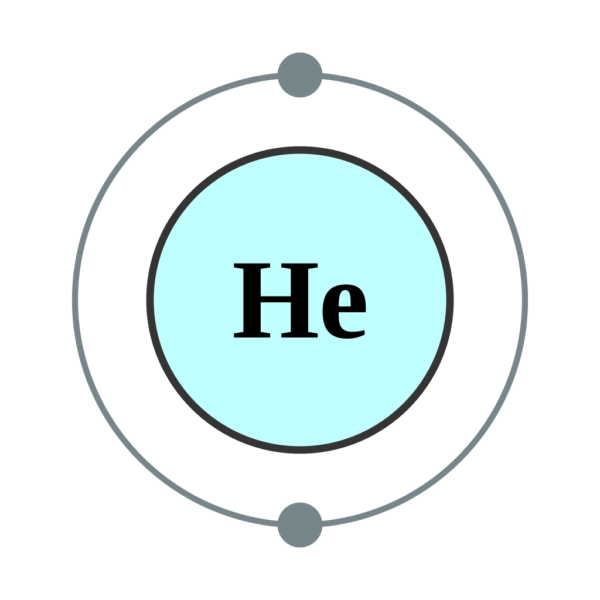

←
→
Helium (from Greek: ἥλιος, translit. Helios, lit. 'Sun') is a chemical element with symbol He and atomic number 2. It is a colorless, odorless, tasteless, non-toxic, inert, monatomic gas, the first in the noble gas group in the periodic table. Its boiling point is the lowest among all the elements. After hydrogen, helium is the second lightest and second most abundant element in the observable universe, being present at about 24% of the total elemental mass, which is more than 12 times the mass of all the heavier elements combined. Its abundance is similar to this figure in the Sun and in Jupiter. This is due to the very high nuclear binding energy (per nucleon) of helium-4 with respect to the next three elements after helium. This helium-4 binding energy also accounts for why it is a product of both nuclear fusion and radioactive decay. Most helium in the universe is helium-4, the vast majority of which was formed during the Big Bang. Large amounts of new helium are being created by nuclear fusion of hydrogen in stars.
Helium is named for the Greek Titan of the Sun, Helios. It was first detected as an unknown yellow spectral line signature in sunlight during a solar eclipse in 1868 by Georges Rayet, Captain C. T. Haig, Norman R. Pogson, and Lieutenant John Herschel, and was subsequently confirmed by French astronomer Jules Janssen. Janssen is often jointly credited with detecting the element along with Norman Lockyer. Janssen recorded the helium spectral line during the solar eclipse of 1868 while Lockyer observed it from Britain. Lockyer was the first to propose that the line was due to a new element, which he named. The formal discovery of the element was made in 1895 by two Swedish chemists, Per Teodor Cleve and Nils Abraham Langlet, who found helium emanating from the uranium ore cleveite. In 1903, large reserves of helium were found in natural gas fields in parts of the United States, which is by far the largest supplier of the gas today.
Liquid helium is used in cryogenics (its largest single use, absorbing about a quarter of production), particularly in the cooling of superconducting magnets, with the main commercial application being in MRI scanners. Helium's other industrial uses—as a pressurizing and purge gas, as a protective atmosphere for arc welding and in processes such as growing crystals to make silicon wafers—account for half of the gas produced. A well-known but minor use is as a lifting gas in balloons and airships. As with any gas whose density differs from that of air, inhaling a small volume of helium temporarily changes the timbre and quality of the human voice. In scientific research, the behavior of the two fluid phases of helium-4 (helium I and helium II) is important to researchers studying quantum mechanics (in particular the property of superfluidity) and to those looking at the phenomena, such as superconductivity, produced in matter near absolute zero.
On Earth it is relatively rare—5.2 ppm by volume in the atmosphere. Most terrestrial helium present today is created by the natural radioactive decay of heavy radioactive elements (thorium and uranium, although there are other examples), as the alpha particles emitted by such decays consist of helium-4 nuclei. This radiogenic helium is trapped with natural gas in concentrations as great as 7% by volume, from which it is extracted commercially by a low-temperature separation process called fractional distillation. Previously, terrestrial helium—a non-renewable resource, because once released into the atmosphere it readily escapes into space—was thought to be in increasingly short supply. However, recent studies suggest that helium produced deep in the earth by radioactive decay can collect in natural gas reserves in larger than expected quantities, in some cases having been released by volcanic activity